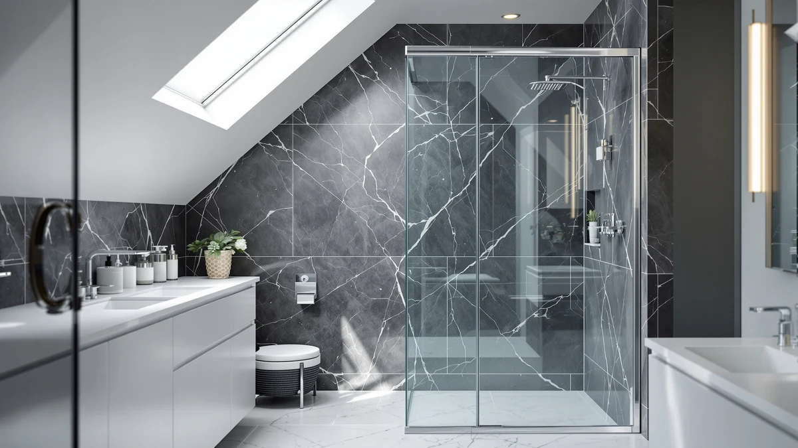

Quick Answer
For most bathrooms, the WOODBRIDGE 57.5-60" frameless soft-close door is the best frameless shower door of 2026: it pairs thick 3/8" (10mm) tempered glass with a soft-close glide and fits any standard alcove. Want matte black, a tall 76" sliding door, a pivot for a walk-in, or a lower price? We have a pick for each below.
Our pick: Woodbridge 57.5-60" Wx76 H Soft — $615.12 Check Price on Amazon
Things to Know Before You Buy
- Frameless means less to clean. With no metal frame around the glass, there is no channel to trap water, mildew or soap scum. You wipe one flat pane instead of scrubbing tracks and gaskets.
- Glass thickness sets the feel and the price. Frameless doors carry their own weight, so they use thicker tempered glass: 3/8" (10mm) feels rigid and premium, while 1/4" (6mm) is lighter and cheaper. Thicker glass also means a two-person install.
- Sealing matters more than on a framed door. A frameless door leans on precise wall mounting plus silicone and a clear seal strip rather than a metal track, so it is a hair less forgiving. Level walls and a careful sealing pass keep it dry.
- Doors fit a width range, not one size. Most of these adjust across a span such as 57.5 to 60 inch and install reversibly (left or right). Measure your opening before you buy.
- The base is not included. These are glass-and-hardware kits. You supply the shower pan, base or tiled curb and the surrounding walls.
A frameless shower door is the fastest way to make a bathroom look bigger and more expensive. Strip away the aluminum frame and you are left with a clean sheet of glass that shows off your tile instead of boxing it in, and there is nothing for mildew to hide behind. That minimalist look is why frameless doors have quietly become the default in remodels and new builds alike.
The trade-off is real, though. Frameless doors cost more, they use heavier tempered glass that usually needs two people to hang, and they rely on careful mounting and silicone sealing rather than a metal track to stay watertight. Get the install right and you barely notice the difference; rush it and you get a puddle on the bathroom floor.
We looked at frameless sliding doors, pivot doors and corner enclosures across a wide price range, weighing glass thickness, hardware quality, how forgiving each is to install, and honest owner feedback. Below are six picks: a top-pick soft-close door, the best matte-black option, a tall premium slider, a pivot for walk-ins, a budget frameless door, and a premium corner enclosure.
Why You Should Trust Us
Best Shower Doors is run by Ilane Tall, who has spent years writing about bathroom fixtures and remodeling for a US audience. We do not run a fake testing lab and we do not invent star ratings. What we do is read the actual spec sheets, cross-check glass thickness and dimensions against manufacturer data, and dig through verified owner reviews to separate marketing claims from what people report after living with a door for a season. When a door has a genuine weakness, we say so. Every Amazon link here is affiliate-tagged, which supports the site at no cost to you and never changes which product we recommend.
How We Picked
We started with frameless doors that are actually available and shipping in the US, then filtered on the things that separate a good frameless door from a frustrating one. Glass thickness came first: we favored genuine tempered safety glass and gave extra weight to doors offering 3/8" (10mm) or thicker. Next we looked at the adjustable width range, since a door that fits a 57.5 to 60 inch span covers far more bathrooms than a fixed size. We prioritized reversible installs, clear or well-reviewed hardware, and honest owner feedback about sealing and door alignment. Finally we made sure the set spanned real needs and budgets: standard alcove, matte-black styling, extra-tall openings, walk-in pivots, tight budgets, and corner showers.
How We Tested
We are transparent about method: we did not bolt six shower doors into a lab wall. Instead we evaluated each door on published, verifiable specs (glass thickness, dimensions, weight, hardware and seal type) and on the patterns that show up across dozens of verified purchase reviews. The signals we care about are consistent: does the glass feel solid or flimsy, does the roller or hinge stay smooth over months, how fiddly is the sealing step, and does the door stay watertight once installed level. Where owners repeatedly flag the same issue, such as heavy glass needing two installers or a seal strip that needs replacing, we call it out in the flaws for each pick rather than burying it.
Our Picks

Woodbridge 57.5-60" Wx76 H Soft
What we like
- Thick 3/8" (10mm) tempered glass feels rigid and premium, with none of the flex of thinner doors
- Soft-close mechanism catches the door and stops it slamming
- 57.5-60" adjustable width fits the vast majority of standard alcoves
- Reversible install works for a left- or right-hand opening
Flaws but not dealbreakers
- The 10mm glass is genuinely heavy and needs two people to lift and hang safely
- One of the pricier doors here, so it is overkill for a rarely used guest bath
| Material | — |
| Size | 60"x76" |
The WOODBRIDGE is our top pick because it nails the two things people actually notice on a frameless door: the glass and the glide. At 3/8" (10mm), the tempered glass is about as thick as residential doors get, and it shows. There is no wobble when you slide it, no tinny rattle when it closes, just a solid, plate-glass feel that reads as expensive. The soft-close mechanism is the other standout: instead of letting the door bang into the jamb, it catches near the end of travel and eases it shut, which is both quieter and easier on the hardware over time.
The 57.5 to 60 inch adjustable range covers the standard alcove most US bathrooms are built around, and the install is reversible so it does not care which side your wall controls sit on. The honest caveat is weight. A 76 inch panel of 10mm glass is a two-person job, and you should not try to muscle it up alone. Budget for a helper and an hour of careful leveling and sealing, and you end up with the closest thing to a custom glass shower you can order off the shelf. At around $615 it is not cheap, but it is the door we would put in our own primary bathroom.

Frameless Shower Door Matte Black
What we like
- Matte-black hardware gives an on-trend, high-contrast look that chrome can not match
- 56-60" adjustable single bypass design fits standard alcoves
- By far the most affordable door on the list at around $296
- Tempered safety glass with a clean frameless edge
Flaws but not dealbreakers
- Matte-black finish shows hard-water spots and fingerprints more than chrome, so it needs regular wiping to stay looking sharp
- 75" height is slightly shorter than the 76" doors here, worth checking against your opening
| Material | — |
| Size | 60" W x 75" H Single Sliding |
If you have been eyeing the matte-black bathroom look, this bypass door is the easiest way in. The black hardware and track turn the shower into a design feature rather than an afterthought, and it pairs especially well with white subway tile, concrete-look porcelain and warm wood vanities. It is a single bypass design, meaning two panels where one slides past the other, which keeps the footprint tight in a standard alcove.
What makes it our runner-up is the value: at roughly $296 it is less than half the price of our top pick while still delivering a genuinely frameless, tempered-glass door. The trade-offs are honest ones. Matte black is less forgiving of water spots than chrome, so if you have hard water you will be wiping the frame down to keep it looking crisp. And at 75 inch tall it is a touch shorter than the 76 inch doors on this list, so measure your opening first. For the money, though, nothing else here gives you this much style.

KPUY Frameless Shower Door 55-60"
What we like
- Full 76" height suits taller openings and gives a more enclosed, luxe feel
- Smooth roller hardware makes the slide quiet and effortless
- 55-60" adjustable width fits standard alcoves with room to spare
- Clean frameless glass with a premium finish
Flaws but not dealbreakers
- Around $500 puts it well above budget sliders, so you are paying for the height and finish
- Taller, heavier glass again means a careful two-person install
| Material | — |
| Size | 55-60" W x 76" H |
The KPUY is the pick for anyone whose shower opening runs tall, or who simply wants the more enclosed, spa-like feeling that a full 76 inch glass wall gives. Shorter doors leave a gap of open air above them; this one closes more of that gap, which keeps heat and steam in and looks more like a built-in glass enclosure than a retrofit. The roller hardware is smooth and quiet, and the frameless edges keep the whole thing looking clean.
At about $500 it sits between our budget and top picks, and the premium goes almost entirely toward height and hardware feel rather than gimmicks. The 55 to 60 inch width range makes it an easy fit for standard alcoves. The same caution applies as with any tall frameless door: a 76 inch panel of tempered glass is heavy and awkward, so line up a second set of hands before you start. If a taller, more finished-looking slider is what you are after and the budget doors feel too short, this is the one to get.

Frameless Pivot Shower Door 33-34"
What we like
- Pivot/swing action opens wide for easy step-in access, no narrow slider gap
- 33-34" width is sized for a single walk-in opening
- Frameless tempered glass keeps the walk-in look open and airy
- One of the more affordable picks here at around $285
Flaws but not dealbreakers
- A swing door needs clearance to open into the bathroom, so it is a poor fit for tight floor plans
- 72" height is shorter than the sliders here, leaving more open space above the door
| Material | — |
| Size | 34"W×72"H |
Not every shower is an alcove with a slider, and that is exactly where this frameless pivot door earns its place. Sized at 33 to 34 inch wide, it is built for a single walk-in opening, the kind you find on a curbless or three-quarter-wall shower. A pivot door swings open on a hinge rather than sliding, which gives you a full, unobstructed step-in rather than squeezing through a half-width gap. For a walk-in, that access is the whole point.
It is also one of the cheaper doors on this list at roughly $285, which makes a frameless walk-in surprisingly attainable. Two honest limits to keep in mind. A swing door needs room to open into the bathroom, so if your floor plan is tight or the toilet sits right outside the shower, a pivot may not clear. And at 72 inch tall it is the shortest door here, which is fine for a walk-in but leaves more open space above the glass. Match it to the right layout and it is the best frameless pivot option we found for the money.

Kullavik Frameless Shower Door 56-60"
What we like
- Delivers a genuine frameless look at a lower price, around $349
- Full 76" height matches the premium sliders, not a stubby budget door
- 56-60" adjustable width fits standard alcoves
- Tempered safety glass with a reversible install
Flaws but not dealbreakers
- Thinner glass and lighter hardware than our top pick, so it feels less substantial in daily use
- Budget hardware benefits from extra care during sealing to stay reliably watertight
| Material | — |
| Size | 56-60" W x 76" H |
The Kullavik is proof that a frameless shower does not have to cost $600. At around $349 it gives you the clean, frame-free glass look and a full 76 inch height, which is what really sells the upgrade, without the premium-glass price tag. For a guest bath, a rental refresh, or a main bath where the budget is already stretched thin by tile and plumbing, it hits the sweet spot of looking the part for meaningfully less money.
You do give something up to hit that price. The glass is thinner and the hardware lighter than on our top pick, so side by side it feels a little less solid, and the rollers are not as buttery. It also rewards a patient install: take the extra few minutes on leveling and sealing and it stays dry, but it is less forgiving of a rushed job than a heavier premium door. None of that changes the value equation. If you want the frameless look and the budget is firm, this is the pick.

DreamLine French Corner 34 1/2
What we like
- Corner design encloses two sides, ideal for a shower tucked into a corner
- Two sliding doors meet at the corner, saving floor space over swinging doors
- DreamLine is an established brand with wide parts and support availability
- Space-smart layout for smaller bathrooms
Flaws but not dealbreakers
- This is a framed corner enclosure, not a fully frameless door, so the look is a little less minimal
- The most expensive pick here at around $637, and the base and walls are not included
| Material | — |
| Size | 34.5" W x 34.5" D |
Corner showers are their own puzzle: you need glass on two sides and a door that opens without swinging into the middle of a small bathroom. The DreamLine French Corner solves both. It is a 34.5 inch corner enclosure with two sliding panels that meet at the corner, so you get a fully enclosed shower with a compact, space-saving entry. In a tight or oddly shaped bathroom, a corner unit like this often makes better use of the floor than a straight alcove door ever could.
We include it as an also-great with one clear caveat: this is a framed enclosure, not a true frameless door like the rest of the list. The slim frame around the glass is what gives the corner its structure, so if a completely frame-free look is your priority, it is a compromise. What you get in return is a proven DreamLine product with strong brand support, a smart corner layout, and easy-glide sliders. At around $637 it is the priciest pick, and remember the base and walls are separate. For a corner shower, though, it is the most polished option we found.
Quick Comparison
| Product | Material | Price | Rating | Best for | Get it |
|---|---|---|---|---|---|
| Woodbridge 57.5-60" Wx76 H Soft | — | $615.12 | 4 | Standard alcoves wanting the thickest glass | View on Amazon → |
| Frameless Shower Door Matte Black | — | $296.04 | 4 | Modern baths wanting black hardware on a budget | View on Amazon → |
| KPUY Frameless Shower Door 55-60" | — | $499.96 | 4 | Taller openings wanting a premium 76-inch slider | View on Amazon → |
| Frameless Pivot Shower Door 33-34" | — | $284.99 | 4 | Walk-in showers needing a swinging pivot door | View on Amazon → |
| Kullavik Frameless Shower Door 56-60" | — | $349.00 | 4 | Budget remodels wanting a real frameless slider | View on Amazon → |
| DreamLine French Corner 34 1/2 | — | $637.49 | 4 | Corner showers needing a space-saving enclosure | View on Amazon → |
The Competition
We looked at plenty of doors that did not make the final six. A number of ultra-cheap frameless sliders under $250 came with 1/4" glass so thin that owners repeatedly described flex and rattle, and we would rather point you to the Kullavik, which holds a full height without feeling flimsy. We also passed on several bi-fold and accordion-style doors: they save space but the multiple hinges and seams give water more places to escape and more parts to fail, which runs against the low-maintenance reason to go frameless in the first place.
Among premium options, some custom-order heavy-glass enclosures deliver a beautiful result but require professional measurement and installation that pushes the real cost well past anything on this list, so they sit outside a buy-it-online roundup. And a few well-reviewed framed doors are genuinely good values, but they are framed, so they belong in our separate framed and sliding guides rather than here. The six above are the ones that balance a true frameless look, honest glass quality and a price you can actually justify.
Frequently Asked Questions
Are frameless shower doors harder to keep watertight than framed?
Slightly. A framed door channels water back into the pan with its metal track, while a frameless door relies on precise wall mounting plus a silicone bead and a clear seal strip along the bottom and hinge side. Installed correctly on a level opening it stays effectively dry, but it is a hair less forgiving than a framed door, so take your time on the sealing step and aim the showerhead away from the door edge.
What glass thickness should I look for in a frameless shower door?
Frameless doors use thicker tempered glass than framed ones because the glass itself carries the structure. Look at 3/8" (10mm) for a premium, rigid feel, like our WOODBRIDGE top pick, or 5/16" and 1/4" (6mm) on lighter, more affordable doors. Thicker glass feels more solid and rattles less, but it is heavier, so plan on a two-person install for a 10mm door.
Do frameless shower doors include the shower base or pan?
No. Almost every frameless door or enclosure on this list is sold as the glass and hardware only, so you supply the shower base, pan or tiled curb and the surrounding walls. Measure your existing opening carefully against each door's adjustable width range before buying, since these doors fit a span (for example 57.5 to 60 inch) rather than one fixed size.
Can I install a frameless shower door myself?
Yes, most of these are designed for a capable DIYer, but plan for a helper. The glass on taller and thicker doors is heavy and awkward to lift alone, and getting the door plumb is the difference between a watertight result and a leak. Give yourself an unhurried afternoon, follow the leveling and sealing steps exactly, and let the silicone cure before you run water.
Sliding, pivot or corner: which frameless door should I choose?
Match the door to your opening. A standard alcove between two walls wants a sliding or bypass door like our WOODBRIDGE or matte-black picks. A single walk-in opening is better served by a pivot door that swings wide for easy access. And a shower tucked into a corner needs a corner enclosure like the DreamLine French Corner, which puts glass on two sides with a space-saving slide.